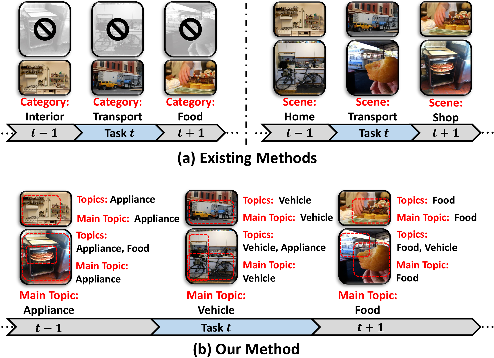
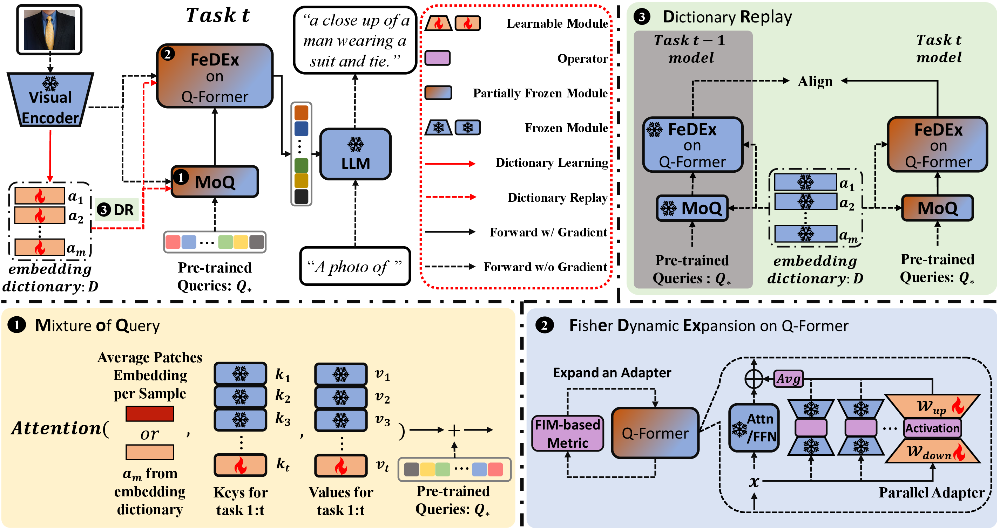
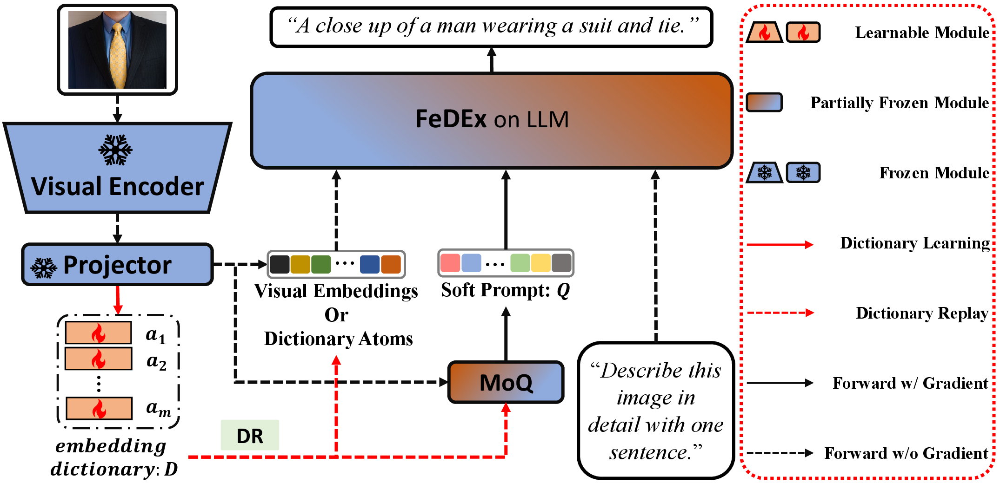
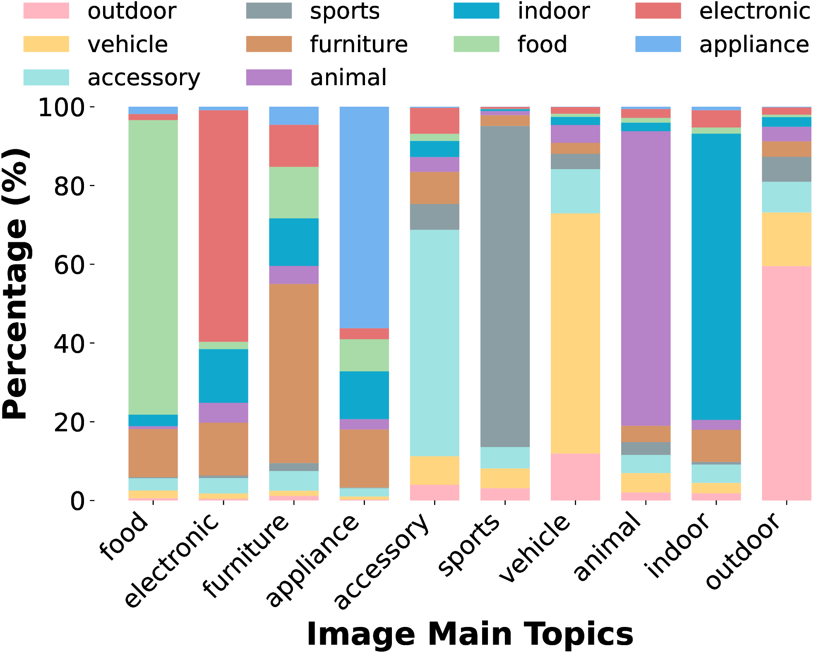
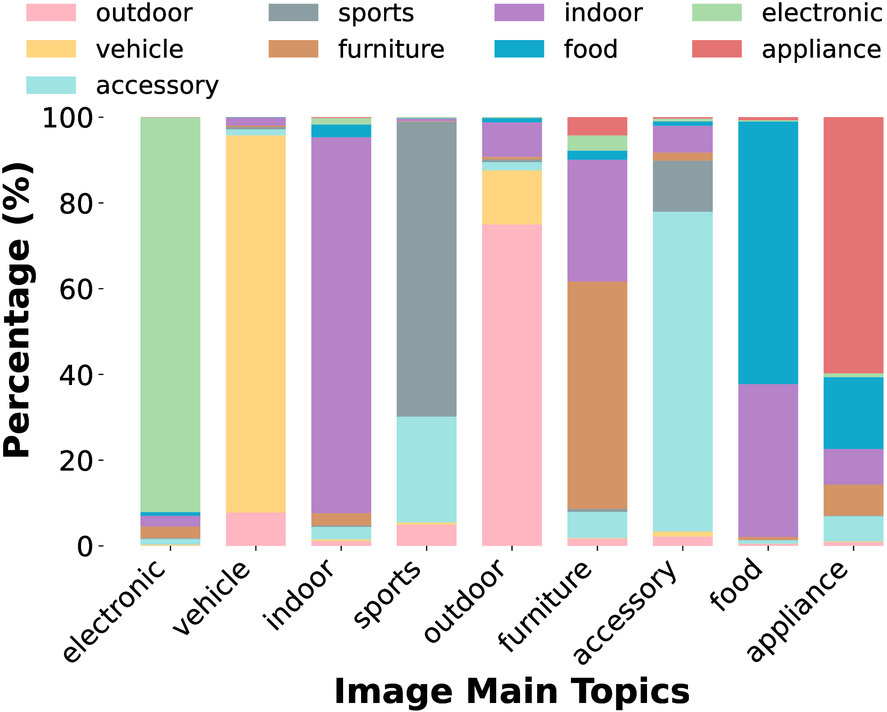

Visual topics change while semantics overlap
ECA studies task sequences defined by an image's main topic. This reflects evolving visual streams where the dominant topic shifts, but secondary topics can reappear across tasks.
Continual alignment under visual topic shifts. ECA updates only the alignment module in pretrained VLMs through Mixture of Query (MoQ), Fisher Dynamic Expansion (FeDEx), and Dictionary Replay (DR), learning new OpenITG tasks without storing raw images.
Overview
Open-ended Image-to-Text Generation asks VLMs to generate accurate and contextually relevant text for images as visual environments evolve over time.
ECA studies task sequences defined by an image's main topic. This reflects evolving visual streams where the dominant topic shifts, but secondary topics can reappear across tasks.
Sequential adaptation can overwrite associations between visual representations and generated language. The alignment module has to learn new task-specific cues without damaging established alignment.
ECA keeps the heavy pretrained modules frozen and combines MoQ, FeDEx, and DR to acquire new OpenITG knowledge without storing raw exemplars from previous tasks.
Motivation
Existing continual image-to-text protocols often build task sequences from disjoint object or scene labels. This makes the split easy to define, but it removes images where several topics appear together, making the benchmark less similar to a real visual stream.
ECA uses main-topic splits. Each image is assigned to a task by its dominant topic, while other visible topics remain in the sample. The task distribution still shifts over time, but shared concepts can reappear later, requiring the model to learn new topic-specific alignment without forgetting earlier image-text associations.

Method
ECA keeps the pretrained vision encoder and language model frozen, and updates only the lightweight module that connects visual representations to language generation. It combines MoQ for task-adaptive queries, FeDEx for FIM-guided adapter expansion, and DR for exemplar-free replay through sparse visual embedding atoms.
Mixes task-specific queries with pretrained queries so the alignment module can absorb new visual-text cues.
View animation FeDExUses an FIM-based interference signal to expand parallel adapters only when more alignment capacity is needed.
View animation DRMaintains an online dictionary of sparse visual atoms and replays embedding-level memory without storing raw images.
View animationMechanism · Mixture of Query
Visual embeddings score learned task keys, and the resulting soft weights aggregate the corresponding task-query values into ΔQ. If a backbone provides a pretrained or base query anchor, MoQ adds ΔQ to it; otherwise ΔQ is used directly before the alignment module.
Mechanism · Fisher Dynamic Expansion
Before training a new task, FeDEx estimates an expansion-probe FIM and computes a normalized FIM-based interference metric. When reusing the current PA would degrade previous alignment, ECA expands a new parallel adapter branch.
Deep Dive · Dictionary Replay
DR learns a sparse embedding dictionary online. Each task first solves sparse codes over the current dictionary, updates the activated atoms, and later replays minibatches sampled from the updated dictionary for embedding-level memory.
Backbones
BLIP-2 exposes the alignment module as a Q-Former between the frozen visual encoder and frozen language model. ECA adapts this Q-Former for continual alignment.

LLaVA-v0 maps visual features into the language token space with a visual projector. ECA treats the top L LLM layers as the effective alignment module.

Benchmarks
We refer to these splits as Topic of Semantic (ToS) benchmarks. Each benchmark is split by the main topic of an image while preserving cross-topic overlap inside each task. During continual evaluation, models generate text without task-specific IDs.
MSCOCO Caption · BLEU-4 · CIDEr · SPICE
VQAVQAv2 · VQA accuracy
ICTextCaps · BLEU-4 · CIDEr · SPICE
VQATextVQA · VQA accuracy


Results
The snapshot below reports selected representative BLIP-2 metrics. Full BLEU-4, CIDEr, SPICE, and VQA accuracy results are available in the paper. Avg is the final average performance, BWT measures backward transfer, and FWT measures forward transfer.
| Benchmark | Metric | Trainable Params | Avg ↑ | BWT ↑ | FWT ↑ |
|---|---|---|---|---|---|
| ToS-COCO Caption | CIDEr | 12.29M | 125.56 | -1.86 | 20.58 |
| ToS-VQAv2 | VQA Acc | 21.74M | 68.05 | 1.81 | 16.38 |
| ToS-TextCaps | CIDEr | 21.74M | 103.03 | 1.94 | 39.22 |
| ToS-TextVQA | VQA Acc | 21.74M | 38.13 | 2.36 | 19.30 |
Code
The codebase supports BLIP-2, LLaVA-v0, and InternVL-2.5 backbones with ToS annotation splits and camera-ready configs.
Open GitHubDataset
The Hugging Face repository contains ToS annotations and topic metadata. Images should be downloaded from the original source datasets.
Open DatasetCitation
@inproceedings{kong2026eca,
title={ECA: Efficient Continual Alignment for Open-Ended Image-to-Text Generation},
author={Kong, Jiangtao and Zhao, Peijun and Chen, Chun-Fu and Do, Youngwook and Hu, Shaohan and Zhou, Tianyi and Shao, Huajie},
booktitle={International Conference on Machine Learning},
year={2026}
}